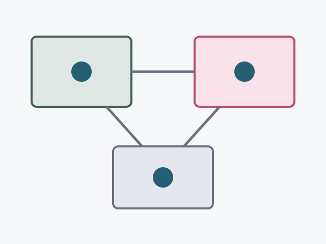
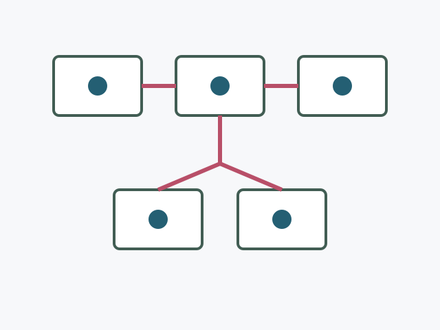
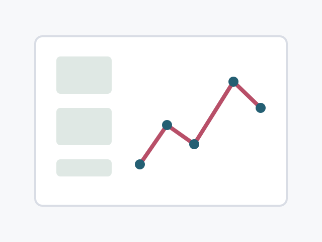

About Me
I am a graduate student and research intern working on multimodal learning, visual perception, and generative AI systems. My current interests include efficient vision-language models, data-centric model improvement, and reliable AI systems for real-world applications.
Before this, I received my bachelor's degree in Computer Science and participated in several engineering and research projects across machine learning systems, data platforms, and applied AI.
I am open to research collaboration, internship opportunities, and discussions around multimodal AI and large-scale training systems.
News
- Personal homepage template launched.
- Started a new project on efficient multimodal AI systems.
- One research project released as an open-source prototype.
- Served as a teaching assistant for an AI systems course.
Selected Publications
* Equal contribution, † Corresponding author

Efficient Multimodal Understanding with Adaptive Visual Tokens
A lightweight framework for allocating visual tokens according to task difficulty, improving inference efficiency while preserving multimodal reasoning quality.

Reliable Training Pipelines for Large-Scale AI Applications
A practical study of training orchestration, monitoring, and failure recovery for production-oriented machine learning workloads.

Data-Centric Evaluation for Robust Visual Recognition
A data-centric evaluation protocol for diagnosing distribution shifts, label noise, and robustness issues in visual recognition.
More Publications
Teaching
- Teaching Assistant, Artificial Intelligence Systems.
- Teaching Assistant, Data Structures and Algorithms.
Internships
- Research Intern, GenAI Team, Technology Company.
- Machine Learning Intern, AI Research Lab.
- Software Engineering Intern, Data Platform Team.
Honors and Awards
- Outstanding Graduate Student Award.
- First-Class Academic Scholarship.
- First Prize, University Software Design Competition.
- National Scholarship.